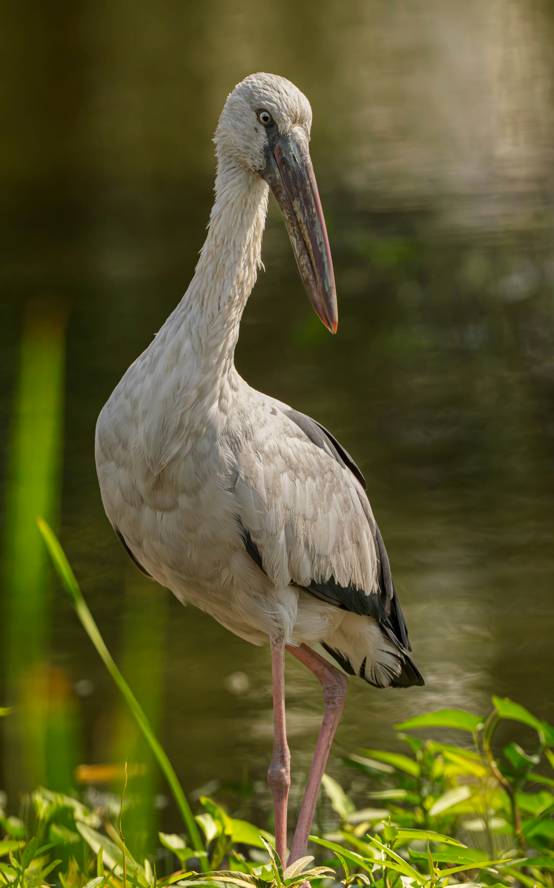

The Indian Openbill is a large wetland stork named for the noticeable gap between the upper and lower parts of its bill when the bill is closed. This unusual bill structure is particularly useful for feeding on freshwater snails, which are an important part of its diet. Indian Openbills are commonly seen in marshes, ponds, flooded fields, rice paddies, shallow wetlands, and other watery habitats. They walk slowly through shallow water while searching for prey and may gather in large numbers when food is plentiful. In flight, their broad wings, long legs, and long neck give them the unmistakable appearance of a stork.
Family: Ciconiidae